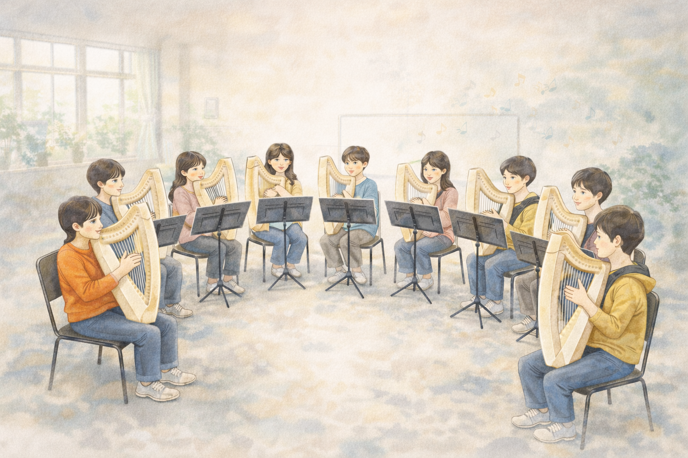
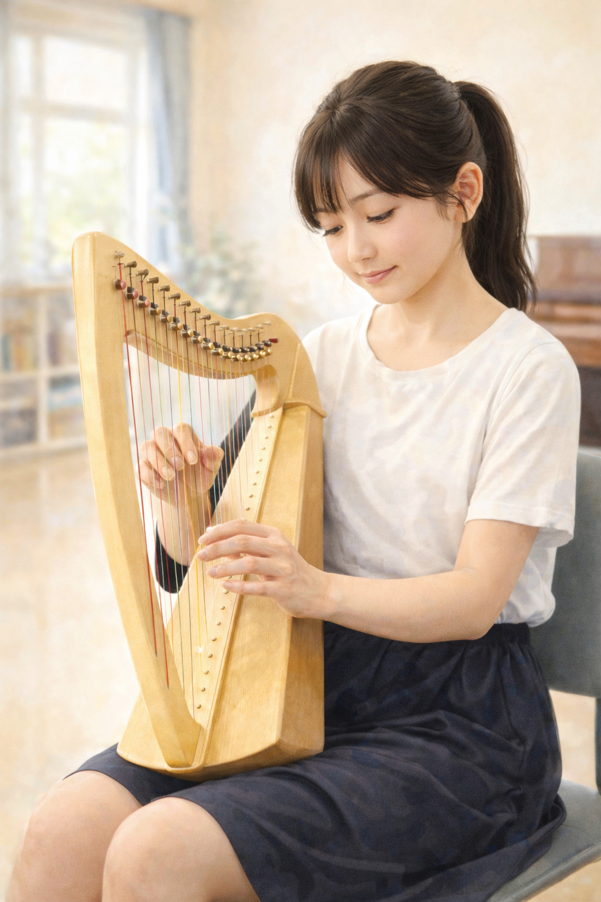

活動のようす


楽器レンタル制度があるため、 楽器をお持ちでない方でも安心して始められます。
ハープ専属クラブとして、全国初の部活動地域移行クラブ活動
令和7年度後期より「いちのみや休日部活動移行」の一環として活動。 ハープに特化した専門指導を地域で継続して受けられるクラブです。
講師は現役プロハープ奏者。 初心者でも安心して取り組めるよう、 基礎から丁寧に指導しています。
活動実績
-
部活動地域移行クラブとして活動
いちのみや休日地域クラブ活動の一環として運営 -
メディア掲載
講師の演奏活動としてテレビ・新聞・ラジオ・業界誌掲載実績あり -
初心者中心の音楽教育
楽器レンタル制度あり・基礎から丁寧に指導
保護者の声
「楽譜が読めない状態から始めましたが、
丁寧に教えていただき安心して続けられています。」
小学生保護者
「楽器を購入せず始められる点が助かりました。
自宅練習できるので上達が早いです。」
中学生保護者
クラブ活動の流れ
- チューニング
- 本日のテーマ説明
- 個人・パート練習
- 合奏練習
- 本日の振り返り・次回予定確認
練習は約90分。 途中10分程度の休憩をはさみながら進めています。

講師紹介
久野 綾子（和装ハーピスト 綾）
愛知県一宮市出身。3歳よりピアノを始め、15歳でハープに転向。 名古屋音楽大学音楽学部器楽学科絃楽器専攻卒業。 同大学大学院音楽研究科修了。
葵美妃氏、井上久美子氏に師事。 在学中よりコンサート、オーケストラ、吹奏楽、 室内楽、オペラ、ミュージカルなど幅広く出演。
メンタルヘルスケア演奏が中日新聞掲載。 一宮市商工会ビジネスプランコンテスト優秀賞受賞。 テレビ・新聞・雑誌など多数メディア掲載。
2017年より「和装ハーピスト綾」として 日本文化とハープを融合した活動を展開。 癒しと安らぎの音色を届けています。
▶ 公式サイト： 和装ハーピスト綾